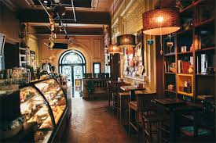
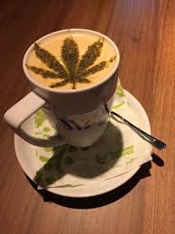
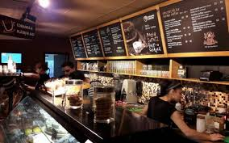

Un mic "Starbucks al Puerto Rico-ului", Tucano îţi inspiră acel "good vibe" despre care vorbeşte toată lumea, încă din momentul în care ai făcut primul pas pe uşă. Sortimente personalizate de cafea servite alături de cel mai delicios cheesecake, într-o atmosfera relaxantă ce aduce cu celebrele melodii ale lui Bob Marley, sunt ingredientele perfecte pentru un "coffee-fix" reuşit.
Orar:


Locaţii: